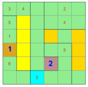
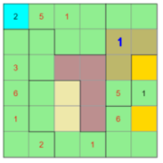
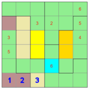

Strategien zum Programm Squiggly Sudoku
Ausgangslage ist aktivierte Checkbox bei 'Nicht mögliche Felder für Ziffer' und die dort aktivierte Ziffer.Strategie 1: In einem farbigen (nicht-grünen) Feld, das allein in einer Zeile, in einer Kolonne oder in einer Box steht, muss die aktivierte Ziffer stehen.
Bsp: Im Feld 1 muss die Ziffer 2 stehen, da das Feld allein in einer Kolonne steht.Im Feld 2 muss die Ziffer 2 stehen, da das Feld allein in einer Box steht.
Strategie 2: Löscht eine Setzung alle Felder einer anderen Box aus, so kann die Ziffer nicht in diesem Feld stehen.
Bsp: Im Feld 1 muss die Ziffer 2 stehen, da eine Setzung im danebenliegenden Feld alle Felder der orangen Box auslöschen würde und es in der Zeile von Feld 1 keine weitere Möglichkeit mehr gibt.Strategie 3: Weiterführende Strategie von Strategie 2
Bsp: Im Feld 1 muss die Ziffer 6 stehen, da eine Setzung im Feld 3 alle Felder der gelben Box und eine Setzung in Feld 2 alle Felder der hellbraunen Box auslöschen würde.Lösungsverfahren
Eine mögliche Grundstrategie: Aktivieren Sie der Reihe nach die Ziffern 1 bis 6 (bzw 9) bei 'Nicht mögliche Felder für Ziffer'.Gehen Sie pro Ziffer die Strategien 1, 2 und 3 durch. Nach der letzten Ziffer beginnen Sie wieder von vorne, bis keine Ziffer mehr gesetzt werden kann.
Meistens haben Sie dann das Sudoku schon gelöst.
Wenn nicht, so wählen Sie eine Ziffer, bei der es noch genau 2 Felder derselben Farbe gibt. Machen Sie eine Zwischenspeicherung mit 'Save'. Setzen Sie nun die gewählte Ziffer in eines der beiden Felder ('Versuchssetzung').
Fahren Sie fort gemäss der oben angegebenen Grundstrategie. Falls Sie einen Widerspruch bemerken, so laden Sie mit 'Load' den vorher gespeicherten Zwischenstand und setzen die gewählte Ziffer ins zweite Feld.
Falls Sie vor Bemerkung des Widerspruchs wieder keine eindeutige Setzung machen können, so müssen Sie eine zweite 'Versuchssetzung' machen.